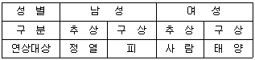
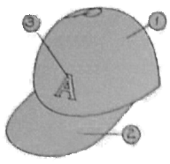
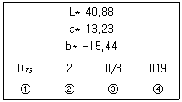
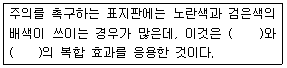

컬러리스트산업기사 (2012-03-04 기출문제)
1과목: 색채심리
1. 국제 언어로서 활용되는 교통 및 공공시설물에 사용되는안전을 위한 표준색으로 구급장비, 상비약, 의약품에사용되는 상징색은?
- 빨강
- 노랑
- 파랑
- 초록
(정답률: 90%)

2. 대상별 색채 선호 설명이 틀린 것은?
- 남성은 어두운 톤의 청색, 갈색, 회색 계열을 선호한다.
- 남성보다 여성은 다양한 색을 선호한다.
- 자동차의 색채 선호는 지역의 환경 및 빛의 강도, 기후생활패턴에 따라 다르다.
- 라틴계 민족은 한색계열을, 북극계 민족은 난색계열을선호한다.
(정답률: 92%)
3. 색채의 추상적 자유연상법 가운데 연관관계가 가장 적합하지않은 것은?
- 적색 - 광명, 활력, 명쾌
- 백색 - 청결, 소박, 신성
- 청색 - 명상, 냉정, 심원
- 자색 - 신비, 우아, 예술
(정답률: 알수없음)
4. 반대색끼리의 배색에서 느낄 수 있는 심리는?
- 협조적, 온화함, 상냥함
- 차분함, 일관됨, 시원시원함
- 강함, 생생함, 화려함
- 정적임, 간결함, 건전함
(정답률: 80%)
5. 모더니즘의 대두와 함께 주목을 받게 된 색은?
- 빨강과 자주
- 노랑과 청색
- 흰색과 검정색
- 베이지색과 카키색
(정답률: 알수없음)
6. 1966년 일본 색채 디자인 연구소에 의해 개발된 색채의미전달을 위한 언어적 표현과 시각 이미지에 의한색채 분류를 위해 체계화한 방법의 이름은?
- 이미지 스케일
- 이미지 매핑
- 칼라 팔레트
- 세그먼트 맵
(정답률: 알수없음)
7. 색채와 다른 감각간의 교류현상은?
- 공간감각
- 공간지각
- 공감각
- 연결지각
(정답률: 알수없음)
8. 모리스 데리베레(Maurice Deribere)가 주장한 맛을대표하는 색채와 상관없는 것은?
- 단만 : pink
- 짠맛 : red
- 신맛 : yellow
- 쓴맛 : brown-maroon
(정답률: 60%)
9. 사회 문화정보로서의 색은 시대 문화에 따라 다르게적용되는 경우가 있다. 다음 중 종교, 전통의식, 신화,예술 등에서 상징적인 연결이 틀린 것은?
- 녹색 - 봄과 새 생명의 탄생
- 노란색 - 서양문화권에서 겁쟁이, 배신자
- 흰색 - 서양문화권에서 장례식
- 청색 - 기독교와 천주교의 하느님과 성모마리아
(정답률: 92%)
10. 식욕촉진을 위한 음식점의 실내 색채계획으로 가장바람직은 색계열은?
- 녹색계열
- 노란색계열
- 자주색계열
- 주황색계열
(정답률: 알수없음)
11. 연상 조사 결과 다음과 같은 결과가 예상되는 색채는?성 별남 성여 성구 분추 상구 상추 상구 상연상대상정 열피사 람태 양

- 2.5Y 4/12
- 7.5R 4/12
- 2.5Y 8/1
- 7.5R 8/1
(정답률: 80%)
12. 제품 광고에서 색채의 기능이 아닌 것은?
- 주목
- 통일
- 연상
- 치료
(정답률: 알수없음)
13. 배색을 할 때 가장 큰 면적을 차지하고 주된 이미지를나타내는 색은?
- 주조색
- 강조색
- 보조색
- 바탕색
(정답률: 알수없음)
14. 다음 중 안정적이며, 온도감 없이 중성적인 느낌의색채는?
- 녹색
- 귤색
- 파랑
- 다홍
(정답률: 90%)
15. 성인과 아동의 일반적인 색채 선호도에 대한 설명으로옳은 것은?
- 일반적으로 성인의 선호색은 녹색이다.
- 남성들은 비교적 어두운 톤을 선호하고 여성의 경우는밝고 맑은 톤을 선호한다.
- 아기들이 가장 좋아하는 색은 빨강과 노랑으로 단파장계열이다.
- 성인이 되면서 장파장의 파랑을 점차 좋아하게 된다.
(정답률: 84%)
16. 다음 중 가장 화려한 느낌을 주는 배색은?
- deep 톤의 한색
- pale 톤의 한색
- vivid 톤의 난색
- dark 톤의 난색
(정답률: 알수없음)
17. 보편적으로 이해되는 공감각적 연결이 적절한 것은?
- 꽃(floral) 향 - 분홍
- 시원한 음료수 포장 - 빨강
- 부드러운 감촉 - 검정
- 민트(mint)향 - 노랑
(정답률: 알수없음)
18. 색채조절을 이용한 색채계획에 대한 설명으로 옳은 것은?
- 난색 계열색은 식욕을 감퇴시킨다.
- 한색 계열색은 멀어지는 느낌을 준다.
- 남향, 동향의 방에는 난색 계열을 사용한다.
- 한색계열의 사무실은 업무능률을 저하시킬 수 있다.
(정답률: 알수없음)
19. 색채의 시간성과 속도감에 대한 설명 중 옳은 것은?
- 장파장인 빨간색 계열은 시간이 짧게 느껴진다.
- 높은 명도의 밝은 색이 속도감에서는 빨리 움직이는것으로 느껴진다.
- 단파장인 파랑색 계열은 시간이 길게 느껴지고,속도감에서는 장파장인 난색계보다 빠르게 움직이는 것같이 지각된다.
- 높은 채도의 맑은 색은 속도감이 느리며, 낮은 채도의칙칙한 색은 빠르게 느껴진다.
(정답률: 64%)
20. 다음 중 노인 병동의 사인 색채 계획으로 가장 적합한 것은?
- 흰색 바탕에 하늘색 글씨
- 회색 바탕에 파란색 글씨
- 노란색 바탕에 남색 글씨
- 빨간색 바탕에 파란색 글씨
(정답률: 알수없음)
2과목: 색채디자인
21. 패션디자인의 주 요소에 해당되지 않는 것은?
- 봉제
- 재질
- 색채
- 선
(정답률: 알수없음)
22. 국제적인 행사 등에서의 사용을 목적으로 제작된그림문자로서, 언어를 초월해서 직감으로 이해할 수있도록 한 그래픽 심벌은?
- 다이어그램(diagram)
- 로고타입(logotype)
- 레터링(lettering)
- 픽토그램(pictograrm)
(정답률: 알수없음)
23. 색채 마케팅에 영향을 주는 인구통계학적 요인으로거리가 먼 것은?
- 거주 지역
- 신체 지수
- 연령 및 성별
- 라이프스타일
(정답률: 100%)
24. 미술 양식과 색채에 대한 연결이 틀린 것은?
- 다다이즘 - 어둡고 칙칙한 톤
- 플럭서스 - 회색조가 주류이며, 어두운 톤의 컬러매치
- 바로크 - 온화하고 약한 색조
- 로코코 - 부드러운 색조의 엷은 자주색, 분홍색
(정답률: 70%)
25. 형태 지각심리(gestalt psychology)의 법칙에 해당되지 않는 것은?
- 보완성
- 접근성
- 유사성
- 폐쇄성
(정답률: 알수없음)
26. 최소한의 예술이라고 하는 미니멀리즘의 색채 경향이아닌 것은?
- 개성적 성격, 극단적 간결성, 기계적 엄밀성을 표현
- 통합되고 단순한 색채 사용
- 시각적 원근감을 도입한 일루전(illusion) 효과 강조
- 순수한 색조대비와 개성 없는 색채도입
(정답률: 60%)
27. 윌리엄 모리스에 관한 내용 중 틀린 것은?
- 영국의 시인이며 사상가로서 기계적인 생산을 부정하며미술공예운동의 주창자
- 바우하우스의 설립자이자 근대건축과 디자인 운동의대표적인 지도자
- 낭만적이고 유미주의적인 의식의 소유자로서 근대디자인의 선구자
- 존 러스킨의 사상을 이어받아 1861년에는 모리스마샬, 포크너 상회를 설립하여 직접 공예품을 제작
(정답률: 알수없음)
28. 색채계획(Color planning)에 관한 설명으로 틀린 것은?
- 색채의 목표를 달성하기 위해 제품의 특성 및 판매자의심리를 이용해 효과적으로 색채를 적용하는 과정이다.
- 제품의 차별화, 환경조성, 업무의 향상, 피로의 경감등의 효과를 위해 절대적으로 필요하다.
- 색채 목적을 정확히 인식하고 시장조사와 색채심리,색채전달계획을 세워 디자인을 적용해야한다.
- 시작정보를 충분히 조사하고 분석한 후에 시장포지셔닝에 의한 색채조절로 고객에게 우호적이고강력하게 인상을 심어주어야 한다.
(정답률: 알수없음)
29. 오스트리아에서 일어난 새로운 조형운동으로 권위적이고세속적인 과거의 모든 양식으로부터의 분리를 주장하며자신들의 작품에 고유 이름을 새겨 넣어 생산된 제품의품질과 디자인에 신뢰성을 부여한 사조는?
- 아트 앤 크래프트
- 아르누보
- 유겐트 스틸
- 시세션
(정답률: 알수없음)
30. 1920년대 미국에서 산업디자인 스튜디오를 개설하여산업디자인이라는 용어를 대중적으로 알리는 계기가되도록 한 사람은?
- 죠지 커페쉬
- 미스 반 데 로에
- 노만 벨 게더스
- 모홀리 니기
(정답률: 39%)
31. 기업이 표적시장을 통하여 원하는 결과를 얻을 수 있도록하기 위하여 사용하는 통제 가능한 마케팅 변수의 총집합이라고 할 수 있는 것은?
- 마케팅 미스
- 마케팅 타겟
- 마케팅 세그멘테이션
- 마케팅 포지셔닝
(정답률: 34%)
32. 색채정보 수집방법에서 가장 많이 쓰이는 방법은?
- 실험 연구법
- 표본조사 연구법
- 현장 관찰법
- 패널 조사법
(정답률: 알수없음)
33. 모던 디자인의 특징이 아닌 것은?
- 기능 위주의 디자인
- 대량 생산
- 순수예술과 디자인 분야의 구별이 확연해짐
- 장식성의 회복
(정답률: 70%)
34. 병치 보색현상을 도입한 점묘화법으로 대표되며, 최초로색채를 도구화한 미술 사조는?
- 인상파
- 야수파
- 큐비즘
- 아르누보
(정답률: 알수없음)
35. 다음 중 색채계획에 있어서 주변 환경의 조화가 가장중요한 분야는?
- 패션디자인
- 환경디자인
- 포장디자인
- 제품디자인
(정답률: 알수없음)
36. 석판 인쇄술 발명 이후 초기 포스터 시대의 대표적포스터 작가가 아닌 사람은?
- 쉐레(Cheret)
- 스텐렌(Steinlen)
- 칸딘스키(Kandinsky)
- 로트렉(Lautrec)
(정답률: 알수없음)
37. 몬드리안을 중심으로 한 신조형주의 운동으로서 개성을배제하는 주지주의적 추상미술운동이며, 색채의 선택은검정, 회식, 하양과 작은 면적의 빨강, 노랑, 파랑의순수한 원색으로 표현한 디자인 사조는?
- 큐비즘
- 데스틸
- 바우하우스
- 아르데코
(정답률: 알수없음)
38. 다음 그림과 같은 모자의 색채 디자인을 하려고 한다.전체적으로 밝고 명랑한 느낌의 색채 디자인 시 주조색,보조색, 강조색에 대한 적용이 적절하지 않은 것은?

- ① 부분에 주조색을 적용하였다.
- ③ 부분에 ①, ② 부분과 뚜렷이 구부되는 색을하였다.
- ① 부분에 검정색을 적용하였다.
- ② 부부에 ①과 어울리도록 유사색상 배색을 하였다.
(정답률: 알수없음)
39. 벽(wall)의 기능에 대한 설명으로 옳은 것은?
- 공간을 규정하는 수평적 요소이다.
- 공간의 크기와 형태를 결정한다.
- 소리, 빛, 열을 조절할 수 있다.
- 신체의 접촉이 거의 없다.
(정답률: 59%)
40. 고객의 신상품 수용과정인 AIDMA 법칙에 속하지 않는것은?
- Attention
- Interest
- Mind
- Action
(정답률: 알수없음)
3과목: 섹채관리
41. 시감을 사용한 색채 측정 방법이 아닌 것은?
- 표준색표집에서 가장 가까운 색좌표를 찾아 수치를표기
- 광원조건이나 환경을 설정한 뒤 조색된 샘플과 직접비교
- 분광측색 방법을 이용해서 표기
- 샘플을 정하고 측정할 때에는 다양한 각도에서 비교측정
(정답률: 알수없음)
42. 다음 중 평판인쇄용 잉크는?
- 오프셋윤전잉크
- 플렉소인쇄잉크
- 등사판잉크
- 레지스터잉크
(정답률: 알수없음)
43. 광 노출에 의해 나타나는 뚜렷한 표본의 가열을 수반하지않는 시료색의 가역적인 변화는?
- 블리드
- 광변색
- 열변색
- 간섭 박편
(정답률: 알수없음)
44. HSB 디지털 색채 시스템에 관한 설명으로 틀린 것은?
- H 모드는 색상으로 0°에서 360°까지의 각도로이루어져 있다.
- B 모드는 밝기로 0%에서 100%로 구성되어 있다.
- S 모드는 채도로 0°에서 360°까지의 각도로이루어져 있다.
- B 값이 100%일 경우 반드시 흰색이 아니라 고순도의원색일 수도 있다.
(정답률: 50%)
45. 입고 있던 바지와 같은 색의 상의를 백화점에서 사가지고집에 와서 보니 두 색이 동일하지 않았다. 이처럼 서로다른 두 가지 물체색이 특수한 조명 아래에서는 같은색으로 느껴지는 현상은?
- 연색성
- 항상성
- 조건등색
- 푸르킨예 현상
(정답률: 알수없음)
46. 측색의 궁극적인 목적과 거리가 먼 것은?
- 색을 정확하게 재현하기 위해
- 일정한 색체계로 해석하여 전달하기 위해
- 색을 정확하게 파악하기 위해
- 색의 선호도를 나타내기 위해
(정답률: 80%)
47. 다음의 색 측정표에서 ②는 무엇을 표시하는가?

- 수관방식
- 광원
- 관찰시야
- 일련번호
(정답률: 알수없음)
48. 모니터의 색온도에 관한 설명으로 옳은 것은?
- 6500K로 설정된 모니터의 화면은 9300K로 설정된경우에 비해 청색조를 띄게 된다.
- 모니터의 색온도는 출고 시 1000K로 설정된다.
- 모니터의 색온도는 6500K와 7600K, 9300K 의 세 가지중에서만 선택할 수 있다.
- 맑은 날 보통의 일광(주광)의 색을 구현하기 위해서는색온도를 6500K로 설정하는 것이 좋다.
(정답률: 70%)
49. 다른 물질과 흡착 또는 결합하기 쉬워 방직(紡織) 계통에많이 사용되어 그 외 피혁, 잉크, 종이, 목재 및 식품등의 염색에 사용되는 색소는?
- 안료
- 염료
- 도료
- 광물색소
(정답률: 알수없음)
50. 색채오차에 영향을 주는 요인과 가장 거리가 먼 것은?
- 관찰자의 시야
- 조명방식
- 사물의 고유성질
- 면적효과
(정답률: 알수없음)
51. 다음 중 컬러 인덱스가 제공하지 못하는 정보는?
- 제조 회사에 의한 색 차이
- 염료 및 안료의 화학 구조
- 활용방법
- 견뢰성
(정답률: 알수없음)
52. 다음 중 표면색의 색 맞춤에 쓰이는 자연의 주광은?
- 표준관원 C
- 중심시
- 북창주광
- 자극액
(정답률: 50%)
53. 흑체에 대한 설명으로 틀린 것은?
- 흑체란 외부의 에너지를 모두 반사하는 이론적인 물체이다.
- 반사가 전혀 일어나지 않으므로 이를 상징하여 흑체라고 한다.
- 흑체가 에너지를 흡수하면 물체는 뜨거워진다.
- 흑체는 비교적 저온에서는 붉은 색을 띤다.
(정답률: 80%)
54. 디지털 색채를 처리하는 디바이스들 사이에서 색체정보의 호환을 원활하게 해주는 매개(reference) 역할을하는 CIE XYZ 색공간과 각 디바이스들의 RGB 또는 CMY색체계를 연결시켜주는 과정은?
- 색영역 매핑(color gamut mapping)
- 감마 조정(gamma control)
- 디바이스 특성화(device characterization)
- 컴퓨터 자동배색(computer color matching)
(정답률: 알수없음)
55. 다음 중 염료와 안료에 대한 설명으로 옳은 것은?
- 염료는 주로 물에 잘 녹지 않고 안료는 잘 녹는다.
- 일반 페인트는 주로 안료를 사용하지만, 수성 페인트는염료를 쓴다.
- 컬러프린터의 인쇄잉크는 염료이고, 레이저 토너는 안료이다.
- 염료는 화학적 반응을 통하여 흡착하고 안료는 접착제를 쓴다.
(정답률: 60%)
56. 다음 중 색을 육안으로 비교하여 판정할 때 기준이 되는광원으로 가장 적당한 것은?
- A 광원
- D65 광원
- CWF 광원
- B 광원
(정답률: 알수없음)
57. 장파장의 빛이 방출되며 가정에서 주로 사용하는열광원은?
- 광원 A
- 광원 B
- 광원 D
- 광원 F
(정답률: 알수없음)
58. 인쇄에 따른 환경오염을 줄이기 위해 고안된 잉크는?
- 형광잉크
- 히트세트잉크
- 수성 그라비어잉크
- 금은잉크
(정답률: 알수없음)
59. 짧은 파장의 빛이 입사하여 긴 파장의 빛을 복사하는형광 현상이 있는 시료의 측정에 적합한 색채계는?
- 전방 방식의 분광식 색채계
- 후방 방식의 분광식 색채계
- 전방 방식의 필터식 색채계
- 후방 방식의 필터다초점식 색채계
(정답률: 70%)
60. 액정의 투과도 변화를 이용하여 각종 장치에서 발생되는여러 가지 전기적인 정보를 시각정보로 변화시켜전달하는 전자소자는?
- LCD
- CCD
- CRT
- CIE
(정답률: 알수없음)
4과목: 색채지각의이해
61. 감법혼색의 3원색을 모두 혼색한 결과는?
- 하양
- 검정
- 자주
- 파랑
(정답률: 80%)
62. 색채 현상에 대한 다음의 설명 중에서 틀린 것은?
- 인간은 이론적으로 약 1600만 가지의 색을 변별할수 있다.
- 색의 밝기를 명도라 한다.
- 여러 가지 파장이 고르게 반사되는 경우에는 무채색으로 지각된다.
- 색의 순도를 채도라 하며, 무채색이 많이 포함될수록채도는 낮아진다.
(정답률: 알수없음)
63. 다음 내용의 ( )에 알맞은 것은?

- 명도대비, 채도대비
- 명도대비, 색상대비
- 연변대비, 동화효과
- 연변대비, 계시대비
(정답률: 46%)
64. 다음 중 흰 종이와 검은 종이를 빠르게 교차시켜연속적으로 본 연속혼색은?
- 감산혼색
- 계시혼색
- 병치혼색
- 가산혼색
(정답률: 알수없음)
65. 다음 중 형광현상을 잘 설명한 것은?
- 에너지 보관 법칙으로는 설명되지 않는 현상이다.
- 긴 파장의 빛이 들어가서 그 보다 짧은 파장의 빛이나오는 현상이다.
- 형광염료의 발전으로 색료의 채도범위가 증가하게 되었다.
- 형광현상은 어두운 곳에서만 일어난다.
(정답률: 알수없음)
66. 빨간색을 응시하다가 백색면을 바라보면 어떤 색상의잔상이 보이게 되는가?
- 주황
- 파랑
- 보라
- 청록
(정답률: 알수없음)
67. 두 색이 서로 인접되는 부분이 경계로부터 멀리 떨어져있는 부분보다 색의 3속성별 대비의 현상이 더욱 강하게일어나는 현상은?
- 계시대비
- 연변대비
- 색상대비
- 채도대비
(정답률: 알수없음)
68. 밝은곳에서 어두운 곳으로 이동할 때 빨간색은 점점어둡게, 파란색은 밝게 보이는 것은?
- 연상성
- 푸르킨예 현상
- 항상성
- 잔상
(정답률: 알수없음)
69. 색상이 다른 두 색을 인접시켜 배치하면 두 색이 색상환에서 서로 더 멀어지려는 현상은?
- 보색대비
- 채도대비
- 명도대비
- 색상대비
(정답률: 알수없음)
70. 다음 중 진출색의 조건으로 틀린 것은?
- 따뜻한 색은 차가운 색보다 더 진출해 보인다.
- 밝은 색은 어두운 색보다 더 진출해 보인다.
- 채도가 낮은 색은 채도가 높은 색보다 더 진출해보인다.
- 명도가 동일할 때 유채색은 무채색보다 더 진출해보인다.
(정답률: 82%)
71. 다음 중 빛의 산란과 관련이 있는 것은?
- 비 내린 후 주유소 앞 물웅덩이
- 지면 상태의 아지랑이, 별의 반짝임
- 하늘이 파랗게 보이는 것
- 콤팩트디스크 표면에 보여지는 색
(정답률: 55%)
72. 잔상에 대한 설명 중 틀린 것은?
- 잔상의 출현은 원래 자극의 강도, 지속시간, 크기에 비례한다.
- 원래의 감각과 반대의 밝기 또는 색상을 가질 때양성 잔상이라 한다.
- 영화나 텔레비전의 영상은 양성 잔상을 이용한 것이다.
- 물채색에 있어서의 잔상은 대부분 보색잔상으로 나타난다.
(정답률: 80%)
73. 다음 중 흥분감을 가장 잘 나타낼 수 있는 파장은?
- 730nm
- 600nm
- 530nm
- 420nm
(정답률: 100%)
74. 차가운 색이나 명도가 낮은 색은 내부로 위축되어 보이는성격을 지니고 있다. 이러한 색을 무엇이라고 하는가?
- 팽창색
- 수축색
- 진출색
- 후퇴색
(정답률: 알수없음)
75. 다음 중 혼색에 관한 설명으로 틀린 것은?
- TV화면에서 빨간빛과 파란빛을 내면 마젠타색이 보여진다.
- 시안색 잉크와 노란색 잉크를 혼합하면 녹색 잉크가만들어진다.
- 컬러인쇄에서 두 원색 잉크가 겹쳐 찍혀 만들어진 색의밝기는 두 원색의 밝기의 합이 된다.
- 무대에서 두 색감의 스포트라이트를 한 곳에 비추어만들어지는 색의 밝기는 두 색광의 밝기의 합이 된다.
(정답률: 알수없음)
76. 색채대비현상에 관한 설명으로 옳은 것은?
- 자극과 자극 사이의 거리가 멀어질수록 동시대비현상은약해진다.
- 계속해서 한 곳을 보게 되면 대비효과는 더욱 커진다.
- 일정한 자극이 사라진 후에도 지속적으로 자극을느끼는 현상을 연변대비라 한다.
- 대비현상은 생리적 자극방법에 따라 동시대비와동화현상으로 나눌 수 있다.
(정답률: 75%)
77. 중량감 또는 무게감에 가장 큰 영향을 미치는 것은?
- 채도
- 명도
- 색상
- 보색
(정답률: 알수없음)
78. 헤링의 반대색설 색각이론 중에서 망막에 3종의 광학적물질이 있다고 했다. 그에 해당하지 않는 것은?
- 백흑 물질
- 적녹 물질
- 황청 물질
- 청녹 물질
(정답률: 알수없음)
79. 둘러싸고 있는 색이 주위의 색에 닮아 보이는 것은?
- 색지각(color perception)
- 매스효과(mass effect)
- 색각항상(color constancy)
- 동화효과(assimilation effect)
(정답률: 알수없음)
80. 순응이란 조명 조건이 변화함에 따라 수용기의 민감도가 변화하는 것을 말한다. 다음 중 순응에 관한 설명이 틀린것은?
- 추상체에 의한 순응이 간상체에 의한 순응보다 신속하게 발생한다.
- 어두운 상태에서 밝은 상태로 바뀔 때 민감도가 증가하는 것을 암순응이라 한다.
- 간상체 시각은 약 500nm, 추상체는 약 560nm의 빛에가장 민감하다.
- 암순응이 되면 빨간색 꽃보다 파란색 꽃이 더 잘보이게 된다.
(정답률: 알수없음)
5과목: 색채체계의이해
81. 슈브롤(M.E. Chevreul)의 색채 조화론에 대한 설명으로옳은 것은?
- 관찰자의 디자인 의미 해석에 따라 배색의 좋고 나쁨이변한다.
- 그의 동시대비에 대한 연구는 훗날 비구상 화가와옵아트의 이론적 기반이 되었다.
- 색채의 기하학적 대비와 규칙적인 색상의 배열, 계절감을 색상대비를 통해 표현하려 했다.
- 두 색이 부조화일 때 그 사이에 백색이나 검정을 더하면 조화가 이루어진다고 주장했다.
(정답률: 알수없음)
82. CIE의 L*C*H 색채값에서 빨강의 색상 값은?
- C*=30
- h = 0
- L*=90
- C*= 0
(정답률: 50%)
83. ISCC-NIST 색명법에 관한 설명 중 틀린 것은?
- 미국 색채 협의회(ISCC)에 의해서 1939년에 고안된관용색 이름 체계이다.
- 일본의 JIS나 한국의 KIS를 제정하는데 영향을 주었다.
- 먼셀 색표집을 기준으로 하여 정한 것이다.
- 무채색축의 명도단계를 5개로 나누고 있다.
(정답률: 32%)
84. 우리나라의 전통색은 음향오행사상에서 오정색과 다섯개의 간색인 오간색으로 대변되는 의미론적 상징색채계에 기반을 두고 있다. 다음 중 오간색을 바르게 나열한 것은?
- 적색, 청색, 황색, 백색, 흑색
- 녹색, 벽색, 홍색, 유황색, 자색
- 적색, 청색, 황색, 자색, 흑색
- 녹색, 벽색, 홍색, 황토색, 주작색
(정답률: 알수없음)
85. 오래전부터 습관상 예부터 사용하는 색의 이름이며,일반적으로 이미지의 연상어에 기본적인 색명을 붙여서만들어진 색명법은?
- 일반색명
- 기본색명
- 계통색명
- 관용색명
(정답률: 알수없음)
86. 색채 코드가 T : S : D 로 표기되는 색채 시스템은?
- 일본의 JIS
- 미국의 ISCC-NBS
- 한국의 KS
- 독일의 DIN
(정답률: 55%)
87. 문·스펜서의 색채 조화론에 대한 설명 중 틀린 것은?
- 문·스펜서의 색채 조화론은 먼셀 시스템을 바탕으로한다.
- 2색의 간격이 애매하지 않은 배색이 좋은 배색이다.
- 문·스펜서의 색채 조화론은 조화론을 정량적으로다루기 위해 색채 연상, 색채 적합성을 함께고려하였다.
- 색공간(오메가 공간) 내에서 기하학적 관계가 있도록선택된 배식이 좋은 배색이다.
(정답률: 20%)
88. CIE L*a*b*에 대한 설명으로 옳은 것은?
- a*축은 노랑, 녹색을 나타낸다.
- a*축은 빨강, 녹색을 나타낸다.
- a*축은 노랑, 파랑을 나타낸다.
- a*축은 빨강, 파랑을 나타낸다.
(정답률: 알수없음)
89. 비렌의 색삼각형을 구성하는 7개의 기본범주에 해당하지않는 것은?
- TINT
- GRAY
- ACCENT
- SHADE
(정답률: 알수없음)
90. P.C.C.S (Practical Color Coordinate System) 색체계의설명으로 틀린 것은?
- 색 표시방법에는 색을 3차원으로 나타내는 삼속성의기호표시방법과 계통색명으로 나타내는 방법이 있다.
- 명도와 채도의 복합 개념인 톤과 색상의 조합에 의해색채조화의 기본적인 색채계열을 나타내는 방법이다.
- 색상을 20색상으로 색광과 색료의 3원색이 포함되어 있다.
- 일본 색채 연구소가 1964년에 발표한 색채조화를 목적으로 한 색체계이다.
(정답률: 알수없음)
91. 시각색을 체계화하여 표시하는 방법으로 한국·일본·미국 등에서 표준체계로 사용되고 있는 것은?
- 먼셀 색체계
- NCS 색체계
- P.C.C.S 색체계
- 오스트발트 색체계
(정답률: 70%)
92. 1976년 국제조명위원회(CIE)가 CIE 색도도를 개선하여지각적으로 균등한 색공간을 가지도록 제안한 색체계는?
- XYZ 색체계
- RGB 색체계
- L*a*b* 색체계
- Yxy 색체계
(정답률: 73%)
93. NCS색체계의 색체 표기법에 따른 'S2030-Y90R'에서2030이 나타내는 것은?
- 20 : 검정색도, 30 : 유채색도
- 20 : 유채색도, 30 : 검정색도
- 20 : 유채색도, 30 : 무채색도
- 20 : 백색도, 30 :검정색도
(정답률: 50%)
94. 먼셀 색체계의 색채 표기법은?
- S3040-Y50R
- S5000-N
- 5pg
- 5YR 7/8
(정답률: 70%)
95. 다음의 색표기 중 먼셀 색입체의 수평단면상에서 볼 수없는 나머지 하나는?
- 5R 6/6
- N6
- 10GY 7/4
- 7G 6/8
(정답률: 알수없음)
96. 최초의 먼셀 색체계와 1943년 수정 먼셀 색체계의 가장큰 차이점은?
- 명도에 관한 문제
- 색입체의 기준축
- 기본 색상이름의 수
- 빛에 관한 문제
(정답률: 50%)
97. 다음 중 한국산업표준(KS)에 규정된 유채색의 기본색이름의 수와 그 내용이 옳게 나열된 것은?
- 12개 : 빨강, 주황, 노랑, 연두, 초록, 청록, 파랑,남색, 보라, 자주, 분홍, 갈색
- 3개 : 하양, 회색, 검정
- 10개 : 빨강, 주황, 노랑, 연두, 초록, 청록, 파랑남색, 보라, 자주
- 5개 : 빨강, 노랑, 녹색, 파랑, 보라
(정답률: 60%)
98. 다음 중 전통 색이름 연결이 옳은 것은?
- 지황색(芝黃色) : 종이의 백색
- 휴색(烋色) : 옻으로 물들인 색
- 감색(紺色) : 아주연한 붉은 색
- 치색(緇色) : 비둘기의 깃털 색
(정답률: 알수없음)
99. 혼색계와 현색계에 대한 설명으로 틀린 것은?
- 혼색계의 대표적인 표색계는 CIE XYZ 표준색체계이다.
- 물체의 색을 표시하는 색체계는 대체로 현색계이다.
- 현색계의 대표적인 색체계는 먼셀 색체계와NCS 색체계를 들 수 있다.
- 혼색계는 색지각의 심리적인 속성에 따라 분류되어 있다.
(정답률: 알수없음)
100. 실생활에서 상징적 색채로 사용되었던 오방색 중 방위로는 남(南)쪽을 의미하며 예(禮)와 심장을 상징하는 색상은?
- 파랑
- 검정
- 노랑
- 빨강
(정답률: 알수없음)